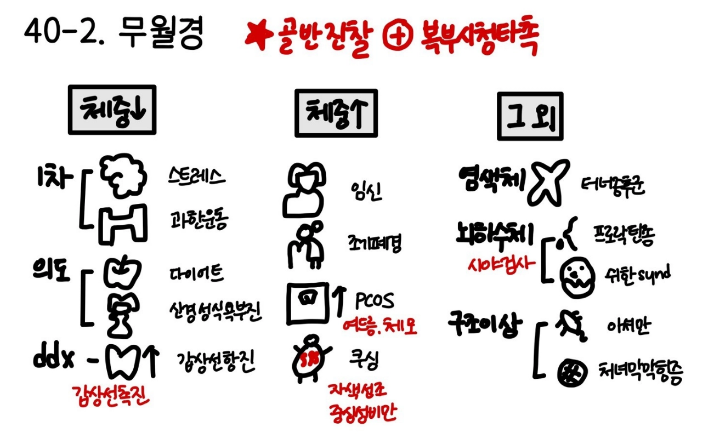

33-1. 월경이상(무월경)
| 의심질환 | 동반증상 |
임신 | 임신 | 피임 안 함 특별한 증상 없음 유방통, 오심(입덧) |
속발성 | Prolactinoma 프로락틴 분비종양 | 무월경 유즙분비, 두통, 시야장애 |
| 뇌하수체저하증 | 뇌하수체 샘종, 뇌종양, 뇌하수체졸중, Sheehan’s syndrome HTx + GH def 🡪 성장지연, 체지방 증가, 근육량 감소 FSH/LH def 🡪 무월경, 불임, 유방/성기 위축, 성욕감퇴 TSH def 🡪 HypoT 증상: 피로, 추위불내성, 변비 ACTH def 🡪 Adrenal insufficiency 증상: 무력감, 허약, 오심/구토, 탈수, 기립성 저혈압, 저혈당 PRL def 🡪 산후 수유 불가 |
| 쿠싱증후군 | 자색선조, Moon face, Buffalo hump, 멍 |
| 갑상샘항진증 | 희발월경 만성피로, 더위불내성, 체중 감소 |
| 갑상샘저하증 | 월경과다/빈발월경 🡪 희발월경 🡪 무월경 추위를 많이 탐, 변비, 이유 없는 체중 증가 피부 건조, 얼굴/눈 주위 부종, 탈모 유즙분비 |
| 다낭난소증후군 | 무월경~과다월경 다모증, 여드름, 체중 증가 |
| 자궁내막유착증 Asherman synd. | 자궁소파술 HTx + |
| 조기 폐경/난소부전 | 이차성 무월경 안면홍조, 화끈거림, 땀, 열감, 두근거림, 불안, 불면증 가족력 |
| 신경성 식욕부진증 | 3회 이상 무월경 젊은 여성 체중 증가에 대한 공포 |
| 과도한 운동/스트레스/다이어트 = 시상하부성 무월경 | GnRH -- 🡪 무월경 |
원발성 | 터너증후군 | 원발성 무월경 작은 키, 작은 턱, 외반주, 요로기형, 심장기형 |
| 스와이어증후군 | 원발성 무월경 유방발달 없음, 음모 있음 |
| 체질적 지연 | 원발성 무월경 뚜렷하지 않은 이차성징의 증거, 골연령 < 실제 연령, 저신장, 유방발달 없음 늦은 사춘기의 가족력 |
| 칼만 증후군 Kallmann syndrome | 원발성 무월경 유방발달 없음, 후각 이상, 신경성 난청 |
| 처녀막 막힘증 | 원발성 무월경 질 입구 막혀 있음, 주기적 복통 |
| 안드로겐 무감응 증후군 | 원발성 무월경 유방발달 있음, 음모 없음 질이 4cm 이하 짧은 맹관, 서혜부 덩이(잠복 고환) |
| 뮐러관 무발생 | 원발성 무월경 유방발달 있음, 저신장, 골격장애, 청각이상, 신장기형 등 동반 가능 질이 4cm 이하 짧은 맹관 |


평가목표 1) 월경이상을 호소하는 환자에게 병력청취와 신체진찰로 원인인자를 구별하여 적절한 진단 및 치료 계획을 수립할 수 있는지 2) 치료가 필요한 환자를 감별할 수 있는지 | |||||
구체적인 성과 | |||||
병력 청취
| 정상과 비정상 월경 평가 | - 정상월경: 주기: 24~38일 규칙성: 최대 7~9일 이내 차이 기간: 8일 이내 양: 5~80mL = 한 주기 당 10~25개 중형 생리대 - 희발월경: 월경 주기가 38일 이상 - 원발성/일차성 무월경: 2차성징 없음 + 13세까지 초경 없음 = Estrogen 부재 2차성징 있음 + 15세까지 초경 없음 = 해부학적 유출로 없음/막힘 - 속발성/이차성 무월경: 이전 주기가 규칙적이었다면 3mo, 불규칙적이었다면 6mo 이상 월경이 없는 경우 = 난소/시상하부/뇌하수체/내분비 이상 | |||
| 임신과 관련된 월경이상 원인 | - 정상 임신: 수정란 착상 후 hCG 영향으로 월경 중단, 유방통/오심(입덧) 동반 가능 - 자궁외 임신: 수정란 자궁 밖에 착상, 무월경 후 부정출혈과 하복부 통증 발생, 파열 시 쇼크 위험 - 포상기태: 태반 조직 비정상 정식, 무월경 후 출혈, hCG 비정상적으로 상승 - 산후 무월경/수유: 출산 후 또는 수유 중 프로락틴 상승으로 배란 억제 | |||
| 나이에 따른 월경이상 원인 | 10대 | 시상하부성 무월경: 스트레스, 무리한 다이어트, 거식증, 운동 🡪 GnRH 분비 억제 해부학적 이상 무월경: 처녀막 막힘증, 뮐러관 기형 염색체 이상 무월경: 터너 증후군 체질적 지연: 사춘기 자체가 늦음, 이차 성징 또한 또래보다 늦게 시작함 | ||
|
| 20~30대 | 정상 임신 다낭난소증후군 고프로락틴혈증 조기난소부전/폐경 | ||
|
| 40~50대 | 폐경 의인성 무월경: 자궁적출술, 유방암 항암 화학요법 | ||
| 호르몬 불균형 관련 증상 확인 | Prolactinoma 프로락틴 분비종양 | PRL ++ 🡪 GnRH inhibition 🡪 무월경
유즙분비, 두통, 시야장애 | ||
|
| 뇌하수체저하증 | 뇌하수체 전엽 호르몬 결핍(GH🡪FSH🡪LH🡪FSH🡪ACTH) 🡪 무월경
뇌하수체 샘종, 뇌종양, 뇌하수체졸중, Sheehan’s syndrome HTx + GH def 🡪 성장지연, 체지방 증가, 근육량 감소 FSH/LH def 🡪 무월경, 불임, 유방/성기 위축, 성욕감퇴 TSH def 🡪 HypoT 증상: 피로, 추위불내성, 변비 ACTH def 🡪 Adrenal insufficiency 증상: 무력감, 허약, 오심/구토, 탈수, 기립성 저혈압, 저혈당 PRL def 🡪 산후 수유 불가 | ||
|
| 쿠싱증후군 | Cortisol ++ 🡪 GnRH inhibition 🡪 무월경 자색선조, Moon face, Buffalo hump, 멍 | ||
|
| 갑상샘항진증 | T3,T4 ++ 🡪 Sex hormone binding globulin ++ 🡪 Free Estrogen --, LH surge 장애 🡪 배란 장애 🡪 희발월경 🡪 무월경 만성피로, 더위불내성, 체중 감소 | ||
|
| 갑상샘저하증 | TRH ++ 🡪 PRL ++ 🡪 GnRH inhibition 🡪 월경과다/빈발월경 🡪 희발월경 🡪 무월경 추위를 많이 탐, 변비, 이유 없는 체중 증가 피부 건조, 얼굴/눈 주위 부종, 탈모 유즙분비 | ||
|
| 다낭난소증후군 | Insulin resistance 🡪 Androgen ++ LH ++, FSH relative -- 🡪 배란 억제 🡪 무월경~과다월경 다모증, 여드름, 체중 증가 | ||
|
| 과도한 운동/스트레스/다이어트 = 시상하부성 무월경 | GnRH -- 🡪 무월경 | ||
|
| 조기 폐경/난소부전 | FSH ++ LH ++ 🡪 E2 -- 🡪 이차성 무월경 안면홍조, 화끈거림, 땀, 열감, 두근거림, 불안, 불면증 | ||
| 원발/속발 무월경 감별, 유발요인과 원인질환 확인 | 원발성/일차성 | 난소 이상: 터너 증후군, 스와이어 증후군 시상하부/뇌하수체 이상: 체질적 지연, 칼만 증후군 유출로 없음: 안드로겐 무감응 증후군, 뮐러관 무발생 유출로 막힘: 처녀막 막힘증, 가로 질격막 | ||
|
| 속발성/이차성 | 난소 이상: 조기난소부전, 폐경 시상하부/뇌하수체 이상: 시한증후군, 뇌종양, 시상하부기능적이상 내분비이상: 다낭성난소증후군, 고프로락틴혈증, 갑상샘 이상 유출로 막힘: 자궁내막유착증 | ||
| 환자가 수치심을 느끼지 않도록 배려 | "정확한 원인을 파악하기 위해 다소 개인적이고 민감할 수 있는 질문을 드려야 할 것 같습니다. 모든 내용은 비밀이 보장되니 편안하게 말씀해 주셔도 됩니다." "진료에 꼭 필요한 부분이라 조심스럽게 여쭤봅니다. 혹시 성관계 경험이 있으신가요?" "무월경의 원인을 찾을 때 가장 먼저 확인해야 할 부분 중 하나가 임신 가능성입니다. 혹시 최근 피임 없는 관계가 있었거나 임신 가능성이 조금이라도 있을까요?" | |||
신체 진찰 | 원인 질환 감별할 수 있는 비뇨/복부/내분비 신체진찰 | 기본 신체 진찰 | VS 확인 눈(빈혈, 황달) 입(탈수), 목(림프절, 갑상선), 피부(탈수) | ||
|
| 복부 진찰 | 시 – 청 – 타 – 촉 | ||
|
| 비뇨생식기 진찰 | 골반내진 자궁경부펴바름 검사, 질 분비물 검사 | ||
|
| 내분비 원인 감별 신체진찰 | 눈 Prolactinoma 의심시 시야검사 목 갑상선 촉진 상의탈의 후 유방/음모 발달 피부 여드름/다모증 | ||
| 환자가 수치심을 느끼지 않도록 배려 | 환자 수치스럽지 않게 (진찰 동의, 설명, 불필요한 곳 가려주기) 유즙 분비 확인 시: "호르몬 수치가 높으면 유방에서 분비물이 나올 수 있어 확인이 필요합니다. 불편하시지 않게 필요한 부분만 조심스럽게 확인하겠습니다." 골반 진찰(내진) 안내: "자궁과 난소의 구조적 문제를 확인하기 위해 골반 진찰이나 초음파가 필요할 수 있습니다. 최대한 불편함 없이 진행하겠습니다." | |||
진단 및 치료 | 월경이상의 원인을 구별할 수 있는 진단계획 | 기본 검사 | 혈액검사 | 갑상샘호르몬, 뇌하수체호르몬, 성호르몬, 전해질 | |
|
|
| 소변검사 | 소변호르몬임신반응검사 | |
|
|
| 영상검사 | 골반초음파, 자궁난관조영술, 골반 MRI | |
|
| 특이검사 | 핵형검사 |
| |
|
|
| 영상검사 | 뇌 CT/MRI, | |
|
|
| 혈액/소변검사 | 호르몬 자극 검사, 24hr urine cortisol, Dexamethasone suppression test | |
| 원인에 따른 치료 계획 수립 | 임신 | 임신 교육 | ||
|
| Prolactinoma 프로락틴 분비종양 | Dopamine 작용제(Bromocriptine, cabergoline) “Dopamine에 의해서 prolactin inhibition” | ||
|
| 뇌하수체저하증 | 결핍 호르몬 보충 | ||
|
| 쿠싱증후군 | 부신절제술, 경접형동샘종절제술, Steroid 감량 | ||
|
| 갑상샘항진증 | 항갑상선제(Propylthiouracil, Methimazole) | ||
|
| 갑상샘저하증 | 갑상선 호르몬 보충 | ||
|
| 다낭난소증후군 | 체중감량, 임신 원할 경우 clomiphene, metformin | ||
|
| 자궁내막유착증 Asherman synd. | 소파술, 고용량 E+P | ||
|
| 조기 폐경/난소부전 | 호르몬 대체 요법 | ||
|
| 신경성 식욕부진증 | 입원치료, 영양공급, 정신치료, SSRI | ||
|
| 과도한 운동/스트레스/다이어트 = 시상하부성 무월경 |
| ||
|
| 터너증후군 | E+P, GH | ||
|
| 스와이어증후군 | E+P, GH 생식샘 제거술 | ||
|
| 체질적 지연 | 안심시키기 경과관찰 | ||
|
| 칼만 증후군 Kallmann syndrome | E+P, GH | ||
|
| 처녀막 막힘증 | 처녀막 십자 절개술 | ||
|
| 안드로겐 무감응 증후군 | E+P 생식샘 제거술 | ||
|
| 뮐러관 무발생 | 질 연장 | ||
| 응급치료가 필요한 환자 감별하고 치료계획 수립 | *생리과다/질출혈 해당되는 내용 | |||
환자 교육 | 내분비질환 관련 무월경의 치료계획 교육 | "환자분의 무월경은 단순히 산부인과만의 문제가 아니라, 우리 몸의 여러 호르몬 기관들이 서로 신호를 주고받는 과정에서 균형이 깨졌기 때문에 나타나는 현상입니다. 따라서 단순히 생리만 나오게 하는 것이 목적이 아니라, 검사를 통해 확인된 수치들에 맞춰서 몸 전체의 호르몬 균형을 다시 맞추는 치료가 반드시 필요합니다. 그래야 나중에 생길 수 있는 더 큰 병들을 미리 막을 수 있기 때문입니다."
다낭성/고프로락틴혈증/갑상샘이상/쿠싱증후군 🡪 자궁내막 증식증 및 내막암 예방 : 정상적인 생리는 두 가지 호르몬(에스트로겐, 프로게스테론)이 서로 밀고 당기며 조화를 이뤄야 합니다. 그런데 지금처럼 배란이 안 되면, 자궁 내막을 자극하는 호르몬 하나만 계속해서 쌓이게 됩니다. 이렇게 되면 자궁 벽이 비정상적으로 두꺼워지고, 나중에 자궁내막암 같은 큰 병으로 진행될 위험이 커집니다. 그래서 약을 통해 주기적으로 자궁 내막을 깨끗하게 비워내어 암 위험을 차단해야 합니다.".” 조기난소부전/시상하부성무월경/놔하수체저하증/터너/스와이어 🡪 저에스트로겐 상태에 따른 골밀도 감소 방지 : “여성 호르몬은 우리 몸에서 뼈를 튼튼하게 지켜주는 방패 역할도 합니다. 지금처럼 호르몬이 부족한 상태가 길어지면, 뼈에서 칼슘이 빠져나가는 속도가 빨라져서 뼈에 구멍이 숭숭 뚫리게 됩니다. 특히 젊은 나이에 이런 상태가 지속되면 나중에 심각한 골다공증이나 골절이 생길 수 있기 때문에, 부족한 호르몬을 정상으로 되돌려 뼈 건강을 반드시 지켜야 합니다.” 다낭성/쿠싱/조기난소부전 🡪 전신 대사 기능 정상화 : “호르몬 불균형은 단순히 생리에만 영향을 주는 게 아니라, 우리 몸이 에너지를 쓰고 당분을 조절하는 능력에도 문제를 일으킵니다. 이 상태를 방치하면 당뇨병이나 고지혈증, 심혈관 질환 같은 만성 질환으로 이어질 가능성이 매우 높습니다. 따라서 호르몬 조절 치료는 생리 주기를 찾는 것을 넘어, 앞으로의 당뇨나 혈관 질환 위험을 낮추는 전신 건강 관리의 시작입니다.” | |||
| 비정상 자궁출혈을 조절하기 위한 약물치료 교육 | *생리과다/질출혈 해당되는 내용 | |||
| 환자가 수치심을 느끼지 않도록 배려 | 임신 반응 검사 권유: "환자분을 못 믿어서가 아니라, 가임기 여성의 무월경에서 의학적으로 가장 먼저 배제해야 하는 단계가 임신 반응 검사입니다. 원인 파악의 첫 단추라고 이해해 주시면 감사하겠습니다." 확진 전 안심: "검사 결과가 나오기 전까지 너무 미리 걱정하지 마세요. 무월경은 원인만 정확히 찾으면 충분히 치료 가능한 경우가 많습니다." 생활 습관 교정 권유(스트레스/다이어트): "몸이 너무 힘들거나 에너지가 부족하면 스스로를 보호하려고 생리를 잠시 멈추기도 합니다. 환자분 잘못이 아니니, 이번 기회에 몸을 조금 더 아껴주라는 신호로 받아들여 주시면 좋겠습니다." | |||
질환 | 질환 설명 | 병력청취 | 신체진찰 | 검사 | 치료 |
임신 | 아기가 생기면 호르몬 변화 | 피임 안 함 특별한 증상 없음 유방통, 오심(입덧) | 소변 임신 검사 | 임신 교육 | |
Prolactinoma 프로락틴 분비종양 | 뇌에서 젖을 나오게 하는 호르몬이 너무 많이 나와서, 수유 중으로 착각해 생리 신호를 막고 있는 상태 | 무월경 유즙분비, 두통, 시야장애 | 혈중 prolactin, 뇌 CT/MRI | Dopamine 작용제(Bromocriptine, cabergoline) “Dopamine에 의해서 prolactin inhibition” | |
뇌하수체저하증 | 뇌하수체에서 호르몬을 분비하게 되는데 이 호르몬 분비 기능이 저하되면 그 이후에 분비되는 모든 호르몬이 저하되며 생리도 없어짐 | 뇌하수체 샘종, 뇌종양, 뇌하수체졸중, Sheehan’s syndrome HTx + GH def 🡪 성장지연, 체지방 증가, 근육량 감소 FSH/LH def 🡪 무월경, 불임, 유방/성기 위축, 성욕감퇴 TSH def 🡪 HypoT 증상: 피로, 추위불내성, 변비 ACTH def 🡪 Adrenal insufficiency 증상: 무력감, 허약, 오심/구토, 탈수, 기립성 저혈압, 저혈당 PRL def 🡪 산후 수유 불가 | 뇌 CT/MRI, 호르몬 자극 검사 | 결핍 호르몬 보충 | |
쿠싱증후군 | 몸에서 스트레스 호르몬이 과하게 나와서 전신 대사와 생리 주기를 방해 | 자색선조, Moon face, Buffalo hump, 멍 | 24hr urine cortisol, Dexamenthasone suppression test | 부신절제술, 경접형동샘종절제술, Steroid 감량 | |
갑상샘항진증 | 우리 몸의 에너지 대사를 조절하는 갑상샘 호르몬이 너무 많거나 적으면, 생리 호르몬 신호 전달 체계도 같이 엉킴 | 희발월경 만성피로, 더위불내성, 체중 감소 | TFT | 항갑상선제(Propylthiouracil, Methimazole) | |
갑상샘저하증 |
| 월경과다/빈발월경 🡪 희발월경 🡪 무월경 추위를 많이 탐, 변비, 이유 없는 체중 증가 피부 건조, 얼굴/눈 주위 부종, 탈모 유즙분비 | TFT | 갑상선 호르몬 보충 | |
다낭난소증후군 3+1 | 호르몬 불균형→ 배란이 안됨 난자가 난소 안에 빠져나오지 못하고 여러 개 쌓여 생리가 불규칙/없음 | 무월경~과다월경 다모증, 여드름, 체중 증가 | 골반초음파, FSH/LH, Androgen | 체중감량, 임신 원할 경우 clomiphene, metformin | |
자궁내막유착증 Asherman synd. | 과거 수술 등으로 인해 자궁 내부의 벽들이 서로 달라붙어, 생리혈이 만들어질 공간이 줄어들거나 막힌 상태 | 자궁소파술 HTx + | 자궁난관조영술 | 소파술, 고용량 E+P | |
조기 폐경/난소부전 2+1 | 체질/유전적/호르몬 균형문제로 난소 기능이 일찍 떨어짐 🡪 배란X | 이차성 무월경 안면홍조, 화끈거림, 땀, 열감, 두근거림, 불안, 불면증 가족력 | FSH/LH | 호르몬 대체 요법 | |
신경성 식욕부진증 | 심한 체중감소 영양부족 🡪 뇌-난소 호르몬 축이 억제됨 | 3회 이상 무월경 젊은 여성 체중 증가에 대한 공포 | 전해질검사 | 입원치료, 영양공급, 정신치료, SSRI | |
과도한 운동/스트레스/다이어트
0+1 = 시상하부성 무월경 | "과도한 다이어트나 스트레스로 인해 몸이 위기 상황이라고 판단하고, 생식 기능을 잠시 '절전 모드'로 돌린 것 | GnRH -- 🡪 무월경 |
|
| |
터너증후군 | 태어날 때부터 염색체 이상으로 난소가 잘 발달X → 사춘기부터 무월경 | 원발성 무월경 작은 키, 작은 턱, 외반주, 요로기형, 심장기형 | 골반초음파, FSH/LH, 핵형검사
추가적으로 심장/신장초음파 | E+P, GH | |
스와이어증후군 | 유전적으로 남성이나 성결정 유전자 문제로 고환 발달되지 않고 외부 성기가 여성형으로 발달됨. | 원발성 무월경 유방발달 없음, 음모 있음 | 골반초음파, FSH/LH, 핵형검사 | E+P, GH 생식샘 제거술 | |
체질적 지연 | 성장 속도가 남들보다 조금 느린 편. 가족분들 중에 늦게 시작한 분이 있다면 그 흐름을 따라가는 중 | 원발성 무월경 뚜렷하지 않은 이차성징의 증거, 골연령 < 실제 연령, 저신장, 유방발달 없음 늦은 사춘기의 가족력 | FSH/LH | 안심시키기 경과관찰 | |
칼만 증후군 Kallmann syndrome | 뇌에서 생리 신호를 보내는 부분과 냄새를 맡는 부분이 연결되어 있는데, 이 부분의 발달이 부족하여 생리가 생기지 않는 상태 | 원발성 무월경 유방발달 없음, 후각 이상, 신경성 난청 | 골반초음파, FSH/LH, 핵형검사 | E+P, GH | |
처녀막 막힘증 | 생리혈은 정상적으로 만들어지는데, 나가는 출구가 막혀 있어서 안쪽으로 피가 고여 통증을 유발하는 상태 | 원발성 무월경 질 입구 막혀 있음, 주기적 복통 | 신체검사, 골반 초음파, 골반 MRI | 처녀막 십자 절개술 | |
안드로겐 무감응 증후군 | 몸의 유전적 신호는 다르지만 외형적으로는 완전한 여성이며, 다만 자궁이 형성되지 않아 생리가 없는 상태 고환에서 테스토스테론은 정상 분비되나 수용체가 작동하지 않음. 말초에서 안드로겐이 에스트로겐으로 전환되어 여성 외형을 가짐. | 원발성 무월경 유방발달 있음, 음모 없음 질이 4cm 이하 짧은 맹관, 서혜부 덩이(잠복 고환) | 신체검사, 골반 초음파, 핵형검사 | E+P 생식샘 제거술 | |
뮐러관 무발생 | 호르몬 수치와 이차 성징은 정상이지만 해부학적으로 자궁이 없어 월경이 불가능 | 원발성 무월경 유방발달 있음, 저신장, 골격장애, 청각이상, 신장기형 등 동반 가능 질이 4cm 이하 짧은 맹관 | 신체검사, 골반 초음파, 핵형검사
추가적으로 신장초음파, 척추 X-ray | 질 연장 | |
자기소개/환자확인/환자동의/활력징후 “진료 대기 시간이 길었는데 오래 기다리시느라 고생 많으셨습니다./몸도 좋지 않은데 병원까지 오셔서 기다리시느라 고생이 많으셨습니다.” "정확한 원인을 파악하기 위해 다소 개인적이고 민감할 수 있는 질문을 드릴수도 있을 것 같습니다. 모든 내용은 비밀이 보장되니 편안하게 말씀해 주셔도 됩니다." | ||
O | 언제부터 갑자기/서서히 | |
L | - | |
D | - | |
Co | - | |
Ex | 이전에도? 🡪 치료 | |
C = 여성력 | "진료에 꼭 필요한 부분이라 조심스럽게 여쭤봅니다." "무월경의 원인을 찾을 때 가장 먼저 확인해야 할 부분 중 하나가 임신 가능성입니다. 혹시 최근 피임 없는 관계가 있었거나 임신 가능성이 조금이라도 있을까요?"
[월경력] 초경 + 월경여부/규칙적/월경량/월경통/LMP/임신가능성 [산과력] 결혼/자녀/분만형태, [성관계] 성교통/성관계 전후 질분비물, 출혈/성파트너수 [피임] 어떤 방법으로 [질세척] 주 몇 회, 무엇으로 | |
A | 개방형: “다른 불편한 곳은 없으세요? 네. 그럼 제가 몇가지 자세하게 확인해보겠습니다.” 암기법: 응출전비 임신폐경 피갑쿠 정신터젖
암기법 2 : | |
| 전신 | F/C/Fatigue/WL/피로/식욕부진/부종 |
| 터너 (무월경) | 또래와 비슷한 시기에 2차 성징(가슴, 음모) 유무 목 모양/팔 굽이 확인 키/체중 |
| Prolactinoma (무) | 두통/시야장애/유즙분비 |
| 쿠싱 | 배에 보라색 선 |
| 갑상샘 | 추위/더위 불내성 두근거림 목소리변화/피부변화(거칠/축축) |
| PCOS | 털/여드름 |
| 조기 폐경 | 식은땀/안면홍조/야간발한/불면증 |
| 정신 (신경성식욕부진증) | 우울/불안 본인의 체형에 대한 생각 |
| 응급 (자궁외임신) | 어지럼/호흡곤란 |
F | 운동 - (종류/강도) 식단 - 관리 | |
E | 건강검진, 산부인과 검사(pap/wet/초음파) | |
요약 및 PPI | “지금까지 말씀하신 것을 요약하자면 ~.” “제가 질문을 많이 했는데 잘 대답해주셔서 감사합니다. 몇가지만 더 여쭙도록 하겠습니다.” | |
외 | 수술/시술/입원 자궁 내 장치/피임 장치/소파술 | |
과 | HTN/DM/고지혈증/결핵/간 | |
약 | 약물/영양제/한약 피임약/정신건강의학과 약물 | |
사 | 술/담배/커피/직업/스트레스 | |
가 | 유사증상 자매/어머니 조기 폐경 자매/어머니 체질성 지연 | |
여 | - | |
요약 및 PPI | “네. 이로써 문진은 마치도록 하겠습니다.” “혹시 더 말씀해주시고 싶은 것 있으실까요? 편하게 말씀해주세요.” | |
환자동의 “정확히 어디가 아픈지 확인하기 위해 신체진찰을 진행해야 합니다. 과정 중에 신체 노출과 접촉이 있을 수 있으나, 불편하시지 않게 필요한 부분만 노출하고 최대한 신속히 확인하겠습니다. 괜찮으실까요? 중간중간 불편하시면 언제든 말씀해주세요.” | |
기본 신체진찰 | |
VS 확인 | |
눈 | 빈혈/황달/시야검사 |
입 | 탈수 |
목 | 림프절, 갑상선 |
피부 | 긴장도/오목부종/탈수/맥박 다모증/여드름 유즙분비/유방발달 확인: "호르몬 수치가 높으면 유방에서 분비물이 나올 수 있어 확인이 필요합니다. 불편하시지 않게 필요한 부분만 조심스럽게 확인하겠습니다." |
복부 진찰 "많이 긴장되시죠? 숨을 크게 들이마시고 편안하게 내뱉으시면 검사가 훨씬 수월해집니다. 잘하고 계십니다." | |
시 | 자세 누워서 무릎 굽힘, “명치부터 골반까지 노출하고 다른 부위는 가려드리겠습니다.” “아픈 곳 손으로 짚어보세요.” 외상/수술 흔적/팽만 |
청 | “청진기 손으로 데우긴 하는데 차가울 수 있습니다. 불편하면 말씀해주세요.” 배 4군데(3초)+suprapubic |
타 | 4군데 이상, 아픈 곳 마지막으로 |
촉 | 4군데 이상 얕게/깊게, 아픈 곳 마지막으로 압통 호소 🡪 반동압통도 시행 |
특이 검사 | 비뇨: - CVAT (+) |
*3가지 다 해야할 경우 외음부 시진 🡪 질경 질 내부 시진 🡪 Pap 🡪 Wet 🡪 골반 내진 골반진찰/Wet/Pap | |
안내 | 골반진찰: “질 안쪽 손가락을 넣어서 자궁 및 부속기의 운동성/압통/종괴 유무 확인하는 검사입니다. 불편하실 수 있지만 진단을 위해 필요한 과정입니다. 괜찮으실까요?” Wet/Pap: “질분비물/자궁경부 세포를 채취해서 이상소견 확인하는 검사 하겠습니다. 검채 채취과정 중 질경(보여주면서) 질내 삽입 불편함, 출혈 발생 가능합니다. 괜찮으실까요?
생리중/이전 성경험? 검사 이전 24시간 내: 질정/질세척/성관계/탐폰? 검사 이후 48시간 이후 : 질정/질세척/성관계/탐폰? |
자세 | 옷 갈아입고 침대 누움 + 다리 M자 + 발은 발판 “불필요한 부분은 가려드리겠습니다.” |
Wet/Pap - 준비 | 1) 슬라이드 글라스 3 환자정보 + 날짜 2) 조명 맞추기 3) 생리식염수 + 장갑 + 미지근한 물에 질경 담기 |
골반 내진 – 외음부 시진 | “외음부에 손이 닿을건데 너무 놀라지 마세요.” 시진: “먼저 한번 보겠습니다. 발적/궤양 확인하겠습니다.” |
Wet/Pap - 질경 | “소음순 손 닿습니다, 벌립니다. 놀라지마세요.” “질경 들어갑니다. 불편해요 + 통증 있음 말씀해주세요.” 왼손-벌림/ 오른손-질경 넣기 => 왼손으로 계속 잡고있기 45도 2시방향으로 넣어서 위로 돌림 12시 -> 나사 고정 “보조자분 조명 다시 맞춰주세요.” “시진하겠습니다. 육안상 질벽/경부 이상소견 유/무” |
Wet/Pap - 검체 | Pap: “기구 들어가요. 따끔하고 불편할 수 있어요.” 질분비물 브러쉬로 채취 🡪 합쳐진 세모브러쉬 여러 번 돌려(혹시라도 두개면: 안쪽-cyto/ 바깥쪽 스파츌라) 🡪 채취 후 바로 슬라이드에 바르고 알콜 고정통에 넣기 Wet: “면봉 들어가요. 불편해요.” 질분비물 면봉으로 채취 (질벽+뒷천장) 🡪 면봉을 식염수+시험관에 넣고 충분히 흔들어 섞기
질경 나사 풀고 / 2시 방향 돌리면서 닫기+빼기 제거 하면서도 “육안상 질벽+경부 이상소견 유/무” 검사 결과는 약 1주일 정도 걸립니다. 검사 관련해서 궁금하신 점 있으실까요? 휴지 챙겨주기 |
Wet - 검체정리 | 시험관 식염수 🡪 슬라이드 글라스 위에 1~3 방울 🡪 검체 위에 커버 글라스 45도로 긁어주듯이 올리며 덮기 🡪 환자정보기입 재확인 무조건 장갑 끼고 시행 |
골반 내진 | “손가락을 질 안으로 넣겠습니다. 놀라지 마세요.” “자궁경부 운동성/압통/종괴 확인하겠습니다.” “누를 때 아픈가요?” “손가락 천천히 빼겠습니다. 놀라지마세요. 묻어 나온 질분비물 확인하겠습니다.” |
마무리 | “끝났습니다. 고생 많으셨고 닦으실 수 있도록 여분 휴지 챙겨드리겠습니다. 정리하시고 다시 돌아와주시면 됩니다. 협조해주셔서 감사합니다.” |
진단검사 | 기본 검사 | 혈액검사 | 갑상샘호르몬, 뇌하수체호르몬, 성호르몬, 전해질 |
|
| 소변검사 | 소변호르몬임신반응검사 "환자분을 못 믿어서가 아니라, 가임기 여성의 무월경에서 의학적으로 가장 먼저 배제해야 하는 단계가 임신 반응 검사입니다. 원인 파악의 첫 단추라고 이해해 주시면 감사하겠습니다." |
|
| 영상검사 | 골반초음파, 자궁난관조영술, 골반 MRI |
| 특이검사 | 핵형검사 |
|
|
| 영상검사 | 뇌 CT/MRI |
|
| 혈액/소변검사 | 호르몬 자극 검사, 24hr urine cortisol, Dexamethasone suppression test |
치료 | 임신 | 임신 교육 | |
| Prolactinoma 프로락틴 분비종양 | Dopamine 작용제(Bromocriptine, cabergoline) “Dopamine에 의해서 prolactin inhibition” | |
| 뇌하수체저하증 | 결핍 호르몬 보충 | |
| 쿠싱증후군 | 부신절제술, 경접형동샘종절제술, Steroid 감량 | |
| 갑상샘항진증 | 항갑상선제(Propylthiouracil, Methimazole) | |
| 갑상샘저하증 | 갑상선 호르몬 보충 | |
| 다낭난소증후군 | 체중감량, OC(야즈), 임신 원할 경우 배란유도제(clomiphene)+ metformin | |
| 자궁내막유착증 Asherman synd. | 소파술, 고용량 E+P | |
| 조기 폐경/난소부전 | 호르몬 대체 요법 | |
| 신경성 식욕부진증 | 입원치료, 영양공급, 정신치료, SSRI "몸이 너무 힘들거나 에너지가 부족하면 스스로를 보호하려고 생리를 잠시 멈추기도 합니다. 환자분 잘못이 아니니, 이번 기회에 몸을 조금 더 아껴주라는 신호로 받아들여 주시면 좋겠습니다." | |
| 과도한 운동/스트레스/다이어트 = 시상하부성 무월경 | 안심시키기 경과관찰 원인 교정 "몸이 너무 힘들거나 에너지가 부족하면 스스로를 보호하려고 생리를 잠시 멈추기도 합니다. 환자분 잘못이 아니니, 이번 기회에 몸을 조금 더 아껴주라는 신호로 받아들여 주시면 좋겠습니다." | |
| 터너증후군 | E+P, GH | |
| 스와이어증후군 | E+P, GH 생식샘 제거술 | |
| 체질적 지연 | 안심시키기 경과관찰 | |
| 칼만 증후군 Kallmann syndrome | E+P, GH | |
| 처녀막 막힘증 | 처녀막 십자 절개술 | |
| 안드로겐 무감응 증후군 | E+P 생식샘 제거술 | |
| 뮐러관 무발생 | 질 연장 | |
| 생활습관 개선 | 금연 금주 커피/탄산음료 줄이기 적절한 유산소 운동과 체중 조절, 너무 갑자기 과격한 운동/과도한 식이 제한은 X 적당한 휴식/수면, 스트레스 관리 별다른 문제가 없더라도 정기적 산부인과 검진 고려 가다실 | |
| 추가적 검사 설명 |
| |
[도입] 그동안 무월경/불규칙한 월경으로 걱정도 되고 많이 놀라셨겠습니다.
[진단] 지금 ○○○님께 가장 의심되는 진단명은 '-'입니다. -는 ~한 질병입니다.
[감별] 하지만 다른 -이나, -이 있어도 이러한 증상이 나타날 수 있습니다.
*내분비 문제일 경우: "환자분의 무월경은 단순히 산부인과만의 문제가 아니라, 우리 몸의 여러 호르몬 기관들이 서로 신호를 주고받는 과정에서 균형이 깨졌기 때문에 나타나는 현상입니다. 따라서 단순히 생리만 나오게 하는 것이 목적이 아니라, 검사를 통해 확인된 수치들에 맞춰서 몸 전체의 호르몬 균형을 다시 맞추는 치료가 반드시 필요합니다. 그래야 나중에 생길 수 있는 더 큰 병들을 미리 막을 수 있기 때문입니다."
[진단] 따라서 정확한 진단을 위해, 우선 기본적인 갑상샘호르몬, 뇌하수체호르몬, 성호르몬, 전해질 같은 전체적인 상태를 확인해볼 것이고, 환자분을 못 믿어서가 아니라, 가임기 여성의 무월경에서 의학적으로 가장 먼저 배제해야 하는 단계가 임신 반응 검사입니다. 원인 파악의 첫 단추라고 이해해 주시면 감사하겠습니다. 그리고 영상검사로 골반초음파/MRI/자궁난관조영술을 시행해 확인해봐야 합니다.
[치료] -으로 진단될 경우 치료는 ~. "검사 결과가 나오기 전까지 너무 미리 걱정하지 마세요. 무월경은 원인만 정확히 찾으면 충분히 치료 가능한 경우가 많습니다."
[교육] 금연/금주/커피나 탄산 줄이시고, 적절한 유산소 운동과 체중 조절은 득이 되나 갑자기 시작하는 과도한 운동과 식이제한은 오히려 좋지 않습니다. 적당한 휴식과 수면이 필요하며 스트레스 관리도 중요합니다. 별다른 문제가 없더라도 정기적 산부인과 검진은 받으시길 제안드립니다.
*시간이 있다면:
다낭성/고프로락틴혈증/갑상샘이상/쿠싱증후군 🡪 자궁내막 증식증 및 내막암 예방 : 정상적인 생리는 두 가지 호르몬(에스트로겐, 프로게스테론)이 서로 밀고 당기며 조화를 이뤄야 합니다. 그런데 지금처럼 배란이 안 되면, 자궁 내막을 자극하는 호르몬 하나만 계속해서 쌓이게 됩니다. 이렇게 되면 자궁 벽이 비정상적으로 두꺼워지고, 나중에 자궁내막암 같은 큰 병으로 진행될 위험이 커집니다. 그래서 약을 통해 주기적으로 자궁 내막을 깨끗하게 비워내어 암 위험을 차단해야 합니다.".”
조기난소부전/시상하부성무월경/놔하수체저하증/터너/스와이어 🡪 저에스트로겐 상태에 따른 골밀도 감소 방지 : “여성 호르몬은 우리 몸에서 뼈를 튼튼하게 지켜주는 방패 역할도 합니다. 지금처럼 호르몬이 부족한 상태가 길어지면, 뼈에서 칼슘이 빠져나가는 속도가 빨라져서 뼈에 구멍이 숭숭 뚫리게 됩니다. 특히 젊은 나이에 이런 상태가 지속되면 나중에 심각한 골다공증이나 골절이 생길 수 있기 때문에, 부족한 호르몬을 정상으로 되돌려 뼈 건강을 반드시 지켜야 합니다.”
다낭성/쿠싱/조기난소부전 🡪 전신 대사 기능 정상화 : “호르몬 불균형은 단순히 생리에만 영향을 주는 게 아니라, 우리 몸이 에너지를 쓰고 당분을 조절하는 능력에도 문제를 일으킵니다. 이 상태를 방치하면 당뇨병이나 고지혈증, 심혈관 질환 같은 만성 질환으로 이어질 가능성이 매우 높습니다. 따라서 호르몬 조절 치료는 생리 주기를 찾는 것을 넘어, 앞으로의 당뇨나 혈관 질환 위험을 낮추는 전신 건강 관리의 시작입니다.”
[질문] 궁금한 점이 있으시다면 편하게 물어보세요. 없으시다면, 이것으로 진료를 마치겠습니다. 수고 많으셨습니다.